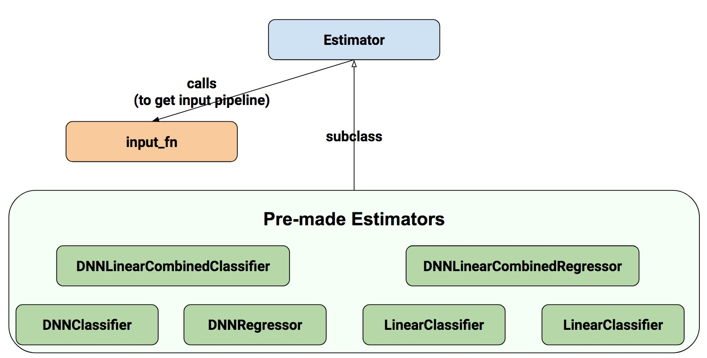
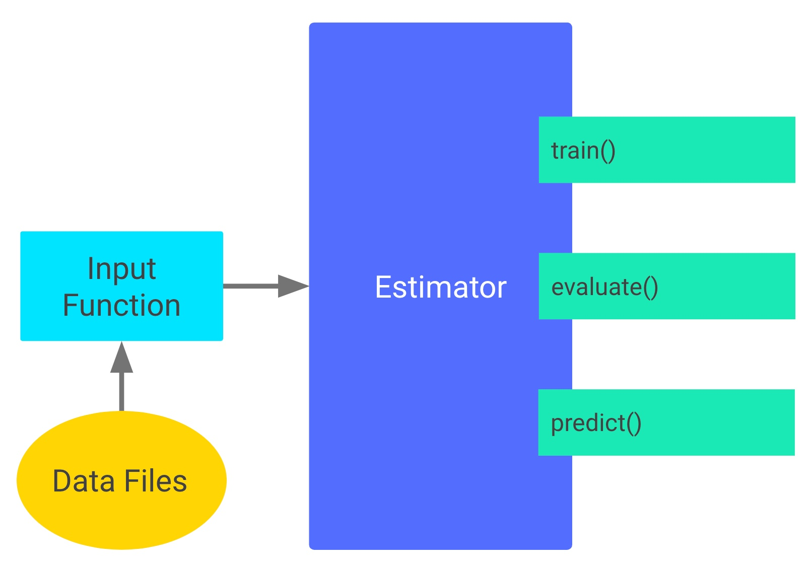
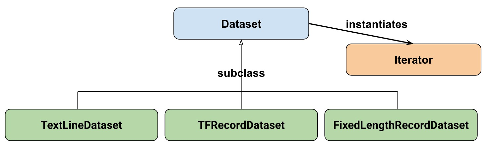
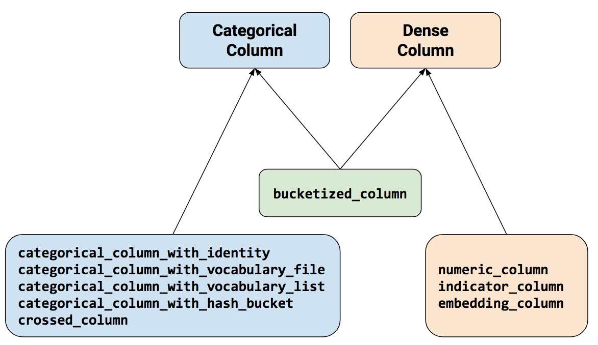
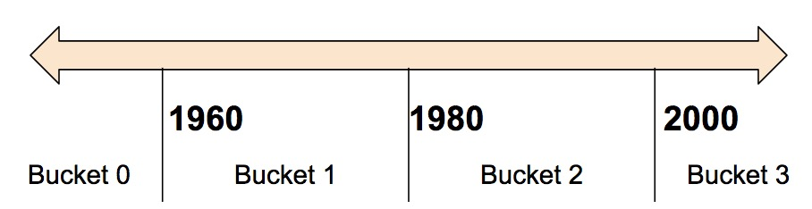
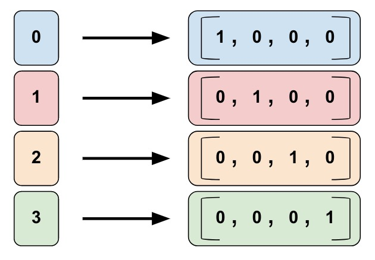
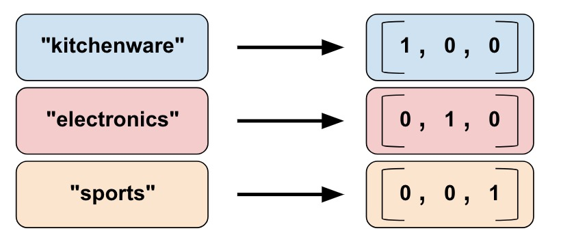
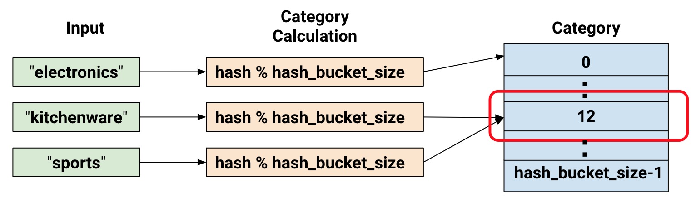
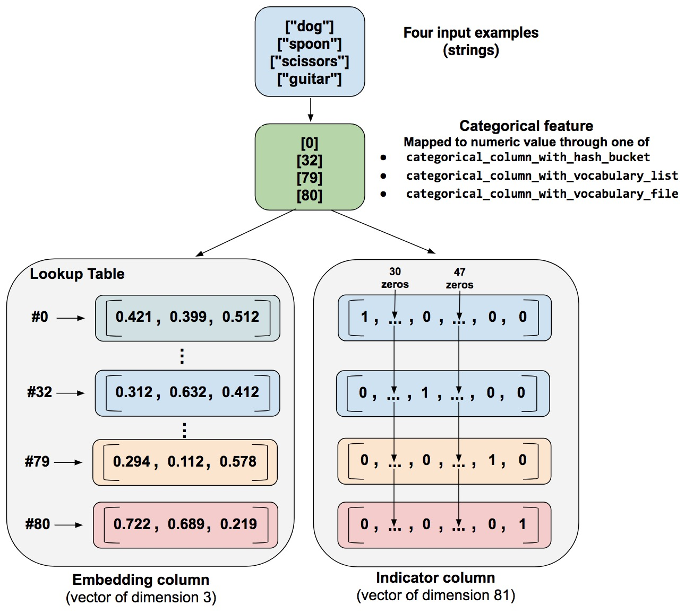

2018-04-12 第一次修订, 新增"多GPU下的写法"
注：代码适用于 TF1.4 ~ TF1.7 。
为什么要使用Estimator, 仅官方文档里提到的第一条优点就让我不得不重视它。 大意是不管你在本地环境还是分布式环境，不管你用一个或多个CPU、GPU还是TPU训练模型，你的模型代码不需要做任何改变。
但看了一些Estimator教程，不怎么满意。因为大部分介绍的方法过于简单，仅适用于实验环境。当你面对大数据、复杂模型和机能限制时，发现那些方法就不灵了。 所以就自己写了一本，方便自查自检。这篇文章，会随着本人的打怪升级等级进行增补。
Estimator

Estimator 作为高层API，可以让我们写出结构清晰的代码。你有两种方法通过 estimator 来构建模型：
- Pre-mode Estimator: 创建指定类型的模型，如上图，它们分别是线性分类和回归模型、深度神经网络分类和回归模型，还有线性和深度混合的分类、回归模型。
- 自定义 Estimator: 按传统的方法写模型，然后用 model_fn 函数封装
# 指定类型模型的估计器举例
classifier = tf.estimator.DNNClassifier(
feature_columns=feature_columns, # 定义好的特征列
hidden_units=[10, 10], # 两个隐藏层, 每层10个神经元
n_classes=3, # 输出3个类别
model_dir=PATH) # 存 checkpoints 的路径
classifier.train(
input_fn=lambda: input_fn(
file_path = FILE_TRAIN, # 训练数据文件路径
perform_shuffle = True, # 打乱数据
repeat_count = 8)) # 重复8次
# 自定义模型的估计器举例
def model_fn(
features, # batch数量的特征，是input_fn 函数的输出
labels, # batch数量的标签，是input_fn 函数的输出
mode): # tf.estimator.ModeKeys.TRAIN / EVAL / PREDICT
# 用特征列（feature_columns)定义输入层
input_layer = tf.feature_column.input_layer(features, feature_columns)
# 模型定义部分
...
# 返回值被EstimatorSpec封装，返回训练时关心的loss和train_op
return tf.estimator.EstimatorSpec(
mode,
loss=loss,
train_op=train_op)
classifier = tf.estimator.Estimator(
model_fn=model_fn, # 自定义模型的封装函数
model_dir=PATH) # 存 checkpoints 的路径
classifier.train(
input_fn=lambda: input_fn(FILE_TRAIN, repeat_count=500, shuffle_count=256))
仔细研究上面两段最简代码，Estimator的编程结构就呼之欲出了，看下图：

input_fn读入数据，预处理后输出到estimator，再由estimator执行训练、评估或预测等任务. 这里的estimator(估计器）就是模型的抽象，它可以直接定义模型或使用外部模型。 特殊的地方在于， 数据送进estimator时，常常被feature_columns（由特征列组成的列表, 与input_fn输出的数据一一对应） 做二次封装. 注意，特征列是使用estimator的主要方法之一，并不是必须.
任务分解如下：
- input_fn: 从原始数据文件读取数据，然后清洗数据、打乱顺序等，用迭代器分批输出特征和对应的标签。
- feature_columns: 特征工程，使数据便于模型训练。
- 模型定义: 简单的模型可考虑用estimator直接定义；自定义模型的话，须封装进model_fn函数，输入层传入feature_columns, 输出用tf.estimator.EstimatorSpec封装。
- 最后，用estimator把上面三项组织在一起，做训练、评估、预测等任务。
input_fn
原始数据一般工整的很少，所以要把input_fn写好，还是蛮难的。
小数据的情况
通常实验性的项目采用小规模的数据，这时只需要简单把数据载入内存作训练即可, 我们可以用numpy、pandas等通用工具来处理数据。 假如原始数据是csv文件，选用pandas读入并作预处理：
# 定义列名
names = [
'symboling',
'normalized-losses',
'make',
...
'price',
]
# 为每列指定类型.
dtypes = {
'symboling': np.int32,
'normalized-losses': np.float32,
'make': str,
...
'price': np.float32,
}
# 读入文件，空数据用 ？号填充.
df = pd.read_csv('filename.csv', names=names, dtype=dtypes, na_values='?')
# 清理数据: 如果发现价格为空就删除该行.
df = df.dropna(axis='rows', how='any', subset=['price'])
# 补足数据: 把其他列的空值填充为缺省值
# 把float32类型的列放入列表 float_columns
float_columns = [k for k,v in dtypes.items() if v == np.float32]
# 对数值列来说，如果发现空值就填充 0
df[float_columns] = df[float_columns].fillna(value=0., axis='columns')
# 构建字符串列，如果方向空值(NaN)就填充''(空串).
string_columns = [k for k,v in dtypes.items() if v == str]
df[string_columns] = df[string_columns].fillna(value='', axis='columns')
这样，数据变得比较工整了。假设最后一项price是label，前面的都是特征，按照习惯，数据被分割成训练和评估数据, 它们分别被叫做 training_data、training_label 和 eval_data、eval_label, 它们的类型都是dataframe.
定义训练和评估的input_fn
# num_epochs=None -> 数据无限循环
# shuffle =True -> 打乱数据
training_input_fn = tf.estimator.inputs.pandas_input_fn(x=training_data, y=training_label, batch_size=64, shuffle=True, num_epochs=None)
# 评估时，数据不需要被打乱，所以shuffle=False
eval_input_fn = tf.estimator.inputs.pandas_input_fn(x=eval_data, y=eval_label, batch_size=64, shuffle=False)
这样，input_fn就快速的写好了。
大数据的情况
pandas一次性把数据载入内存中，不适合大数据量的情形。 面对大规模数据时，需要给数据和模型之间接上管道，然后打开水龙头，按照你想要的流量把数据传入模型。 这时，TF提供的 dataset api 就派上用场了。
Dataset API 的结构

- TextLineDataset: 从文本文件每次读一行.
- TFRecordDataset: 从 TFRecord 文件读取记录.
- FixedLengthRecordDataset: 从二进制文件读取固定大小的记录.
- Iterator: 从dataset中每次读取一笔(一般为batch条)数据.
Dataset版的input_fn
假设我们手上有一堆人口普查数据，其中年收入是字符串类型，形如“>50k”, 我们的目标是预测人们的年收入是大于5万还是小于等于5万。 input_fn函数的写法如下：
首先定义CSV文件中每行数据的列名和缺省值，字典格式.
csv_defaults = collections.OrderedDict([
('age',[0]),
('workclass',['']),
('fnlwgt',[0]),
('education',['']),
('education-num',[0]),
('marital-status',['']),
('occupation',['']),
('relationship',['']),
('race',['']),
('sex',['']),
('capital-gain',[0]),
('capital-loss',[0]),
('hours-per-week',[0]),
('native-country',['']),
('income',['']),
])
接下来是一段通用代码, 具体见代码注释.
# 按行解码 CSV 文件.
# 读入一行数据，对于每列如果有数据就用原值，如果没数据就用缺省值;
# 返回字典格式的键值对
def csv_decoder(line):
parsed = tf.decode_csv(line, list(csv_defaults.values()))
return dict(zip(csv_defaults.keys(), parsed))
# 过滤器，滤掉空行，该函数后面要用
def filter_empty_lines(line):
return tf.not_equal(tf.size(tf.string_split([line], ',').values), 0)
# 创建训练的input_fn
def create_train_input_fn(path):
def input_fn():
dataset = (
tf.data.TextLineDataset(path) # 从文件创建数据集
.filter(filter_empty_lines) # 滤掉空行
.map(csv_decoder) # 解析每行
.shuffle(buffer_size=1000) # 每1000行打乱顺序
.repeat() # 无限重复
.batch(32))
# 迭代器，每次取batch个数据, 这里为32
features = dataset.make_one_shot_iterator().get_next()
# 分离出label值，并转成 true/false 形式
labels = tf.equal(features.pop('income')," >50K")
return features, labels
return input_fn
# 创建测试的input_fn, 注意与前面的区别
def create_test_input_fn(path):
def input_fn():
dataset = (
tf.data.TextLineDataset(path)
.filter(filter_empty_lines)
.map(csv_decoder)
.batch(32))
features = dataset.make_one_shot_iterator().get_next()
labels = tf.equal(columns.pop('income')," >50K")
return features, labels
return input_fn
# 从input_fn中取出数据，每sess.run一次next_batch，就取出一批
train_input_fn = create_train_input_fn(train_path)
next_batch = train_input_fn()
with tf.Session() as sess:
features, label = sess.run(next_batch)
print(features['education'])
print(label)
上面的代码为什么 create_train_input_fn() 套 input_fn() 呢？ 回忆这句：
classifier.train(
input_fn=lambda: input_fn(FILE_TRAIN, repeat_count=500, shuffle_count=256))
因为calssifier.train()中，input_fn要求接的是一个函数，而input_fn() 返回的是特征和标签，所以前面要接上lambda:.
如果采用现在函数套函数的结构, 那么这句前面的lambda就可以去掉, 走个例子：
train_input_fn = create_train_input_fn(FILE_TRAIN)
classifier.train(
input_fn=train_input_fn, steps=100)
特征列
特征列实质上是对input_fn()输出的数据做的二次封装，它是做特征工程的强力工具之一。 特征列好比一种约定，它规定了estimator使用input_fn传入的数据具备什么样的形式, 主要目的是令特征数据变得更方便机器运算。
关于特征列，一共涉及10个函数（图中底层的3个矩形框, 缺weighted_categorical_column）。 按大类分为类别特征列和密集特征列（以下也简称为“类别列”和“密集列”）。

其中，buchetized_column位于中间，表示它作为中介把密集列(通常是numeric_column)转为类别列。对于类别列而言，除了categorical_column_with_hash_buchet和crossed_column外，其余三种均把输入的特征数据处理为one-hot结构。
10个函数可对应9种特征列，我们约定中文称谓如下：
- numeric_column : 数值列
- bucketized_column : 分区列
- indicator_column : 指示列
- embedding_column : 嵌入列
- categorical_column_with_identity : 类别ID列
- categorical_column_with_vocabulary(file or list) : 类别词表列
- categorical_column_with_hash_bucket : 类别哈希列
- crossed_column : 合成列
- weighted_categorical_column : 权重类别列
数值列
以鸢尾花分类问题举例，其输入特征 SepalLength, SepalWidth, PetalLength, PetalWidth （萼片的长宽、花瓣的长宽）就是数值类型。用法：
# 缺省为tf.float32的标量.
numeric_feature_column = tf.feature_column.numeric_column(key="SepalLength")
数值列的缺省类型为 tf.float32, 如果想指定类型，则：
# 用tf.float64的标量表示.
numeric_feature_column = tf.feature_column.numeric_column(key="SepalLength", dtype=tf.float64)
缺省情况下，numeric_column 返回一个单值数据，如果要返回向量数据，则需指定shape值：
# 用10维向量来表示，其中每个元素的类型为 tf.float32.
vector_feature_column = tf.feature_column.numeric_column(key="Bowling", shape=10)
# 用10x5的矩阵来表示.
matrix_feature_column
= tf.feature_column.numeric_column(key="MyMatrix", shape=[10,5])
分区列
如果要把一个数值分成不同区间，比如按年份划分：

划分后的结果为one-hot向量形式。
| 区间 | 表示为 |
|---|---|
| < 1960 | [1, 0, 0, 0] |
= 1960 且 < 1980 | [0, 1, 0, 0] = 1980 且 < 2000 | [0, 0, 1, 0] 2000 | [0, 0, 0, 1]
# 原始输入是一个名为Year的数值列.
numeric_feature_column = tf.feature_column.numeric_column("Year")
# 以1960、1980、2000年来划分区间
bucketized_feature_column = tf.feature_column.bucketized_column(
source_column = numeric_feature_column,
boundaries = [1960, 1980, 2000])
类别Id列
如图，所谓类别Id列是指把左边的单值数据转换为右边的one-hot矢量形式。

比如我们用0、1、2、3分别表示童装、数码、运动和食品四类商品：
- 0=“kitchenware”
- 1="electronics"
- 2="sport"
- 3="food"
# key后跟的列名与input_fn()中的列名一致，
# 其值域为[0, num_buckets)间的整数。
identity_feature_column = tf.feature_column.categorical_column_with_identity(
key='procduct_class',
num_buckets=4)
# 本例中, 'Integer_1' 或 'Integer_2' 皆可替换到上句的 key 之后
def input_fn():
...<code>...
return ({ 'Integer_1':[values], ..<etc>.., 'Integer_2':[values] },
[Label_values])
类别词表列
在NLP任务中，我们不会把词条直接输入模型，而是首先把它转换成数值或向量。类别词表列可以把词条转换为one-hot向量形式，如下图：

从列表创建一个词表列：
vocabulary_feature_column =
tf.feature_column.categorical_column_with_vocabulary_list(
key="feature_name_from_input_fn",
vocabulary_list=["kitchenware", "electronics", "sports"])
从文件创建一个词表列：
vocabulary_feature_column =
tf.feature_column.categorical_column_with_vocabulary_file(
key="feature_name_from_input_fn",
vocabulary_file="product_class.txt",
vocabulary_size=3)
# product_class.txt 的文件内容如下：
kitchenware
electronics
sports
类别哈希列
如果待分类的数据量很大，势必会消耗很大内存。tensorflow提供一种用哈希表分类的方法。
hashed_feature_column =
tf.feature_column.categorical_column_with_hash_bucket(
key = "feature_name_from_input_fn",
hash_buckets_size = 100) # 把特征值哈希分布到100个位置

合成列
有时我们需要组合多个特征为一个特征，这种特征叫合成特征。组合方式通常采用相乘或求笛卡尔积，特征组合有助于表示非线性关系。举个例子，假设我们的模型要计算北京的房产价格，而房产价格与它所处的位置密切相关，而对于位置而言，我们需要用经纬度两个数据同时标定，因此这个经纬度就构成了合成特征。假设我们把北京均匀的纵横切100x100刀，这样就会产生10000个可区分的矩形区域。
# 将经纬度转换为[0, 100)范围内的整型值
def input_fn():
# 从数据集读入经纬度
latitude = ... # A tf.float32 value
longitude = ... # A tf.float32 value
# 返回的字典包含经纬度及其它特征，经纬度的值为0到99的整型值
return { "latitude": latitude, "longitude": longitude, ...}, labels
# 用np.linspace把纬度区间分成100等份
# 然后把100等份的列表定义为区间列.
latitude_buckets = list(np.linspace(33.641336, 33.887157, 99))
latitude_fc = tf.feature_column.bucketized_column(
tf.feature_column.numeric_column('latitude'),
latitude_buckets)
longitude_buckets = list(np.linspace(-84.558798, -84.287259, 99))
longitude_fc = tf.feature_column.bucketized_column(
tf.feature_column.numeric_column('longitude'), longitude_buckets)
# 用fc_longitude x fc_latitude创建交叉特征.
fc_beijing_boxed = tf.feature_column.crossed_column(
keys=[latitude_fc, longitude_fc],
hash_bucket_size=1000) # 把10000个分区哈希分布到1000个位置
创建合成特征的方法为：
- 从input_fn的返回值中取得待组合的特征名，本例中为
latitude和longitude - 做组合的这些特征必须先转换成one-hot形式
由latitude_fc和longitude_fc组成的合成列的形式如下：
(0,0),(0,1)... (0,99)
(1,0),(1,1)... (1,99)
…, …, ...
(99,0),(99,1)...(99, 99)
注意，使用合成列后，仍需在模型中包含你用来合成特征列的原始特征列，它们负责在哈希冲突时，作为附加特征来进一步做类别区分。
指示列
指示列和后面要说的嵌入列均不能直接作为特征给模型使用，它的数据来源于类别特征列，即类别特征列是它的输入。 为什么要作这样的设计？因为estimator执行深度神经网络的任务时，只能使用密集特征列，而类别特征列为稀疏列，需要用指示列或嵌入列作下变换才能被使用。 至于指示列封装后，数据变成什么样子，我在官方文档中没找到，以后知道了再补充。
categorical_column = ... # 创建某种类型的类别特征列
# 定义一个指示列，该列中的每个元素为one-hot向量.
indicator_column = tf.feature_column.indicator_column(categorical_column)
嵌入列
如果类别数据量很大，比如上百万、上亿等，这时采用one-hot来表示就不经济了。记得词嵌入模型中的词向量吗，用一组浮点数来代替one-hot形式来表示一个词条，这种形式在这里被叫做嵌入列，这种方法明显的好处就是令向量维度变得很小。
如下图，假设我们有81个不同的单词，采用one-hot形式需要81维的向量，而采用嵌入列则仅需要3维向量就能表达。

那么，在嵌入列产生的向量中的浮点数是如何确定的呢？通常，由训练数据学得。嵌入列可以提升模型的表达能力，一定程度描述类别间的关系。
如何确定表示81个类别只需要3维呢？有个简单的公式来算出：
$$\frac{1}{2}\log_2(n)$$
# 类别数的0.25次方
embedding_dimensions = number_of_categories**0.25
categorical_column = ... # 创建一个类别列.
# 再把这个类别列转为一个嵌入列.
# 这意味着把one-hot向量转为指定维度的向量.
embedding_column = tf.feature_column.embedding_column(
categorical_column=categorical_column,
dimension=embedding_dimensions)
注意，这仅仅是个一般规则，你也可以自行设定你希望的维度数。
权重类别列
有时会遇到一种配对特征，特征一是本体，特征二是本体对应的权重（或出现频率）。
这就是权重类别列的使用场景。
下面是从Tensorflow源码里抠出例子，话说有个tf.Example对象，它的proto形式如下：
# proto
[
features {
feature {
key: "terms"
value {bytes_list {value: "very" value: "model"}}
}
feature {
key: "frequencies"
value {float_list {value: 0.3 value: 0.1}}
}
},
features {
feature {
key: "terms"
value {bytes_list {value: "when" value: "course" value: "human"}}
}
feature {
key: "frequencies"
value {float_list {value: 0.4 value: 0.1 value: 0.2}}
}
}
]
考虑到proto格式熟悉的人不多，我们把上面的内容简化一下：
terms : ["very", "model"]
frequencies: [ 0.3 , 0.1 ]
容易看出，这两组数据有伴生关系，下面的代码通过权重类别列函数把该特征组合在一起.
categorical_column = categorical_column_with_hash_bucket(
column_name='terms', hash_bucket_size=1000)
weighted_column = weighted_categorical_column(
categorical_column=categorical_column, weight_feature_key='frequencies')
columns = [weighted_column, ...]
features = tf.parse_example(..., features=make_parse_example_spec(columns))
linear_prediction, _, _ = linear_model(features, columns)
使用特征列
我们须把多个特征列封装成一个列表，才能作为参数拿给估计器(estimator)用。 在使用特征列时，要注意区分特征列类型和模型类型。特征列只有两种类型，类别列和密集列； 模型也分两种，线性模型和深度模型。具体如下：
LinearClassifier和LinearRegressor:- 适用所有类型的特征列
DNNClassifier和DNNRegressor:- 仅适用于密集列，如要使用类别列，须经过
indicator_columnor或embedding_column做二次封装
- 仅适用于密集列，如要使用类别列，须经过
DNNLinearCombinedClassifier和DNNLinearCombinedRegressor:linear_feature_columns参数适用所有类型特征列.dnn_feature_columns参数仅适用密集列, 用法和DNNClassifier及DNNRegressor的用法一致.
DNNLinearCombinedClassifier的代码举例：
model = tf.estimator.DNNLinearCombinedClassifier(
model_dir='/tmp/census_model',
linear_feature_columns=base_columns + crossed_columns,
dnn_feature_columns=deep_columns,
dnn_hidden_units=[100, 50])
模型定义
预定义
预定义模型没什么好讲，看看文档就能秒懂，如下面的例子：
# 含2个隐藏层的深度神经网络
classifier = tf.estimator.DNNClassifier(
feature_columns=feature_columns, # 定义好的特征列
hidden_units=[10, 10], # 两个隐藏层, 每层10个神经元
n_classes=3, # 输出3个类别
model_dir=PATH) # 存 checkpoints 的路径
自定义
写自定义模型时，其实和传统的写法差不多，只是有些小地方要注意一下。
基本思路是，定义模型函数，它接收从input_fn()传来的特征和标签，输出由tf.estimator.EstimatorSpec封装后的结果, 函数体主要做两件事情，一件是定义模型，一件是通过分支语句分别实现训练、评估和预测。
我喜欢的结构是把模型单独定义成一个类，然后再用mode_fn()来调用它, mode_fn()的返回用tf.estimator.EstimatorSpec封装，详见下面的例子：
class Sample_model(object):
def __init__(...):
... < code > ...
def __call__(self, inputs, training):
... < code > ...
def model_fn(
features, # batch数量的特征，是input_fn 函数的输出
labels, # batch数量的标签，是input_fn 函数的输出
mode): # tf.estimator.ModeKeys.TRAIN / EVAL / PREDICT
# 用特征列（feature_columns)定义输入层
input_layer = tf.feature_column.input_layer(features, feature_columns)
# 定义模型实例
model = Sample_model(...)
if mode == tf.estimator.ModeKeys.TRAIN:
logits = model(features, training = True)
loss = ...
train_op = ...
accuracy = ...
# 给训练准确度命名，并使它被tf日志记录
tf.identity(accuracy[1], name='train_accuracy')
tf.summary.scalar('train_accuracy', accuracy[1])
return tf.estimator.EstimatorSpec(
mode,
loss=loss,
train_op=train_op)
if mode == tf.estimator.ModeKeys.PREDICT:
logits = model(features, training = False)
predictions = ...
return tf.estimator.EstimatorSpec(
mode,
predictions = predictions
)
if mode == tf.estimator.ModeKeys.EVAL:
logits = model(features, training = False)
loss = ...
return tf.estimator.EstimatorSpec(
mode,
loss=loss)
你可能发现，我好像没用到特征列。 如果在自定义的模型中想用特征列这个工具（再次强调，不是必须），只需在模型的输入层调用下面这个函数即可：
tf.feature_column.linear_model(features, feature_columns, ...)：如果定义线性模型的话用这个，输出是预测结果.tf.feature_column.input_layer(features, feature_columns, ...)：深度模型用这个.
其中features 来自input_fn 的输出， feature_columns 是由多个特征列组成的列表。
# 自定义一个超简单的模型
# 输入层
input_layer = tf.feature_column.input_layer(features, feature_columns)
# 隐藏层: h1，h2
# 10个神经元，relu激活函数，input_layer作为输入参数
h1 = tf.layers.Dense(10, activation=tf.nn.relu)(input_layer)
h2 = tf.layers.Dense(10, activation=tf.nn.relu)(h1)
# 输出层，3个输出
logits = tf.layers.Dense(3)(h2)
合并写法
这是tensorflow 官网给出的一种写法, 只用了一个return, 返回内容的判断放在了前面的 if 分支，你可以根据自己的喜好选择不同写法。
def model_fn(mode, features, labels):
if (mode == tf.estimator.ModeKeys.TRAIN or
mode == tf.estimator.ModeKeys.EVAL):
loss = ...
else:
loss = None
if mode == tf.estimator.ModeKeys.TRAIN:
train_op = ...
else:
train_op = None
if mode == tf.estimator.ModeKeys.PREDICT:
predictions = ...
else:
predictions = None
return tf.estimator.EstimatorSpec(
mode=mode,
predictions=predictions,
loss=loss,
train_op=train_op)
组装
准备好上面的内容后，就可以把model_fn()和input_fn组装在一起了。方法是用estimator实例化 估计器对象，然后用这个对象分别进行训练、评估、预测即可。
在组装时，我们还要加入一些常规的东西。比如设置checkpoint的保存规则，定义一些观测变量， 方便在训练时用TensorBoard观察，还有超参数等等。具体请看示例注释：
# 设置tf输出哪种类别的日志，不同类别详细程度不同
# tf.logging.后的可选值为DEBUG, INFO, WARN, ERROR, or FATAL.
tf.logging.set_verbosity(tf.logging.INFO)
# TensorFlow 版本检查，estimator 要求1.4以上
tf_version = tf.__version__
tf.logging.info("TensorFlow version: {}".format(tf_version))
assert "1.4" <= tf_version, "TensorFlow r1.4 or later is needed"
def main(flags, model_function, input_function):
# flags 携带准备传入模型函数和输入函数的参数。
# 设置训练时每隔多少秒保存一下checkpoint.
run_config = tf.estimator.RunConfig().replace(save_checkpoints_secs=1e9)
# 生成classifier实例
classifier = tf.estimator.Estimator(
model_fn=model_function, model_dir=flags.model_dir, config=run_config,
params={
'resnet_size': flags.resnet_size,
'data_format': flags.data_format,
'batch_size': flags.batch_size,
})
# 每训练 flags.epochs_per_eval 轮更新一下日志内容.
for _ in range(flags.train_epochs // flags.epochs_per_eval):
tensors_to_log = {
'learning_rate': 'learning_rate',
'cross_entropy': 'cross_entropy',
'train_accuracy': 'train_accuracy'
}
# 设置每跑100个迭代器，打印一下日志。
logging_hook = tf.train.LoggingTensorHook(
tensors=tensors_to_log, every_n_iter=100)
print('Starting a training cycle.')
def input_fn_train():
return input_function(True, flags.data_dir, flags.batch_size,
flags.epochs_per_eval, flags.num_parallel_calls)
classifier.train(input_fn=input_fn_train, hooks=[logging_hook])
print('Starting to evaluate.')
# 评估模型并打印结果
def input_fn_eval():
return input_function(False, flags.data_dir, flags.batch_size,
1, flags.num_parallel_calls)
eval_results = classifier.evaluate(input_fn=input_fn_eval)
print(eval_results)
多GPU下的写法
在多GPU的情况下，代码需要做几点小变化。
首先, 检查batch_size的数量，它必须能被GPU的数量整除。其目的是让每批的输入数量被平均分配到各个GPU上。
其次，在model_fn函数中的训练部分封装优化器。
optimizer = ... # 原优化器的定义不变
if params.get('multi_gpu'):
optimizer = tf.contrib.estimator.TowerOptimizer(optimizer)
最后，在main函数部分封装模型函数(model_fn).
if flags.multi_gpu:
model_function = tf.contrib.estimator.replicate_model_fn(
model_fn, loss_reduction=tf.losses.Reduction.MEAN)
其他
三个import
from __future__ import print_function
from __future__ import division
from __future__ import absolute_import
常看到这三个置于顶上的import 语句，一直没有深究它们有什么用，今天查了下资料，发现这三句都是针对python 2.X版本的情况，分别作用如下：
- print_function: print语句必须使用函数形式，而 print ‘test’这句在这种条件下就会报错。
- division: 精确除法，即python2.x版本中，3/4=0（截断除法），有了这句, 3/4=0.75， 而3//4=0
- absolute_import: 绝对路径，解决自定义包与缺省包名字冲突的问题，如你不小心自定义了string，有了这句， import string时引用系统的，没有这句就引用你本地的。
关于超参数
既然训练始终要调参，不如把参数提前定义好，比如下面这个参数类。
import argparse
class MymodelArgParser(argparse.ArgumentParser):
def __init__(self):
super(MymodelArgParser, self).__init__()
self.add_argument(
'--multi_gpu', action='store_true',
help='If set, run across all available GPUs.')
self.add_argument(
'--batch_size',
type=int,
default=100,
help='Number of images to process in a batch')
... <code> ...
还有一种方法也比较优雅，它把参数存成json文件，运行时载入参数即可，见下面的几个功能函数：
import codecs
# 从指定目录载入参数
def load_hparams(model_dir):
"""Load hparams from an existing model directory."""
hparams_file = os.path.join(model_dir, "hparams")
if tf.gfile.Exists(hparams_file):
print("# Loading hparams from %s" % hparams_file)
with codecs.getreader("utf-8")(tf.gfile.GFile(hparams_file, "rb")) as f:
try:
hparams_values = json.load(f)
hparams = tf.contrib.training.HParams(**hparams_values)
except ValueError:
print(" can't load hparams file")
return None
return hparams
else:
return None
# 保存参数到json文件
def save_hparams(out_dir, hparams):
"""Save hparams."""
hparams_file = os.path.join(out_dir, "hparams")
print(" saving hparams to %s" % hparams_file)
with codecs.getwriter("utf-8")(tf.gfile.GFile(hparams_file, "wb")) as f:
f.write(hparams.to_json())
# 用hparams_path里的新值覆盖hparams的老值
def maybe_parse_standard_hparams(hparams, hparams_path):
if not hparams_path:
return hparams
if tf.gfile.Exists(hparams_path):
print("# Loading standard hparams from %s" % hparams_path)
with tf.gfile.GFile(hparams_path, "r") as f:
hparams.parse_json(f.read())
return hparams
主程序入口
def main(FLAGS, model_function, input_function):
... <code> ...
if __name__ == '__main__':
parser = MymodelArgParser()
tf.logging.set_verbosity(tf.logging.INFO)
FLAGS, unparsed = parser.parse_known_args()
tf.app.run(main=main, argv=[sys.argv[0]] + unparsed)